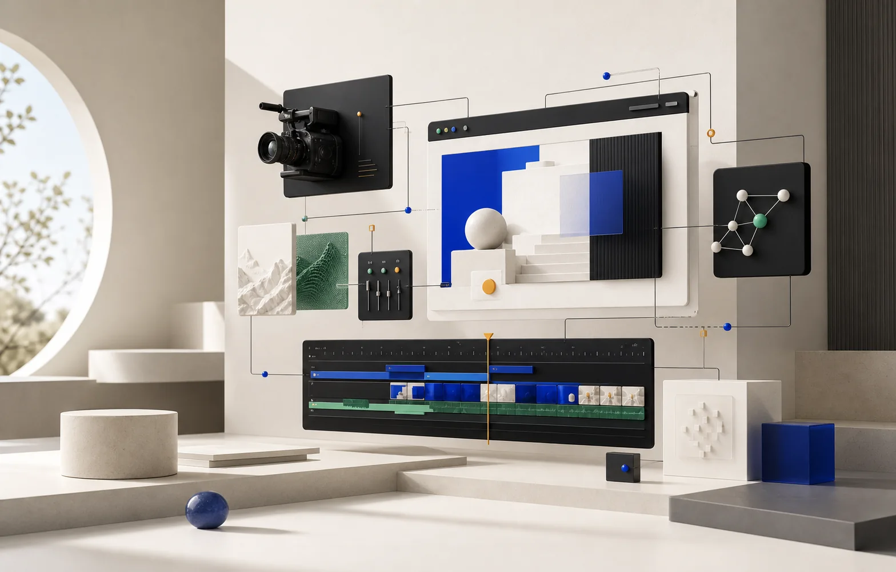
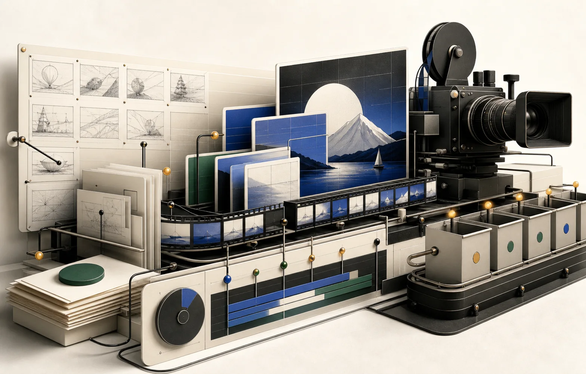
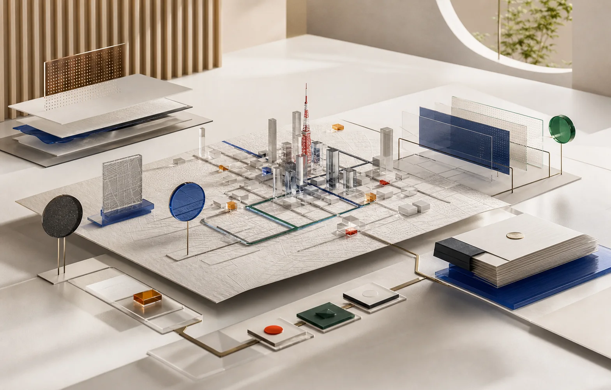

PARADIGM / EXECUTION STUDIO
01 — SYSTEM
VIDEO ·
WEB · AI
ONE COORDINATED SYSTEM
LIVE
WORK

RECURRING VIDEO OPERATIONS
02 — CREATE
A REPEATABLE
DELIVERY LOOP
01PLAN
02CREATE
03REVIEW
04DELIVER

JAPAN MARKET EXECUTION
03 — LOCALIZE
LOCAL SIGNAL
CLEAR ACTION
RESEARCH / LOCALIZE / OPERATE
JP
READY
VISIBLE WORK / CLEAR OWNERSHIP
04 — DELIVER
PARADIGM
EXECUTION SYSTEM
VIDEO / WEB / AI / JAPAN